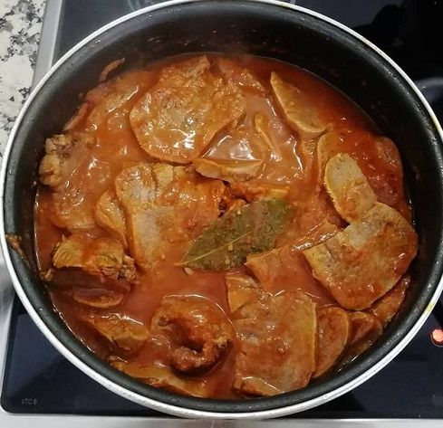

Lengua en salsa

Ingredients
- Lengua 500mg
- One leaf of Laurel
- 4 tomatoes
- 1 onion
- Clean and cook the lengua
- Remove it from the fire and then blend the tomatoes, chop the onion and after that make a sauce
- Add the sauce to the lengua, and the laurel leaf, let it cook for 20 mins
- Serve and enjoy